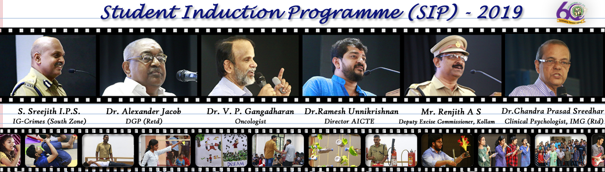

Vision
- Excellence in education and research with socio-economic and environmental outlook
Mission
- To offer state-of-the-art Undergraduate, Postgraduate and Doctoral programmes
- To enhance knowledge by engaging in cutting edge research and by undertaking collaborative projects with industry
- To instill ethical, social and environmental perspectives in designing systems for sustainable development
- To nurture creativity, self learning and interpersonal skills

The College
- T K M College of Engineering, the first Government- aided engineering college in Kerala, is situated in the cashew hub of Kerala, City of Kollam.